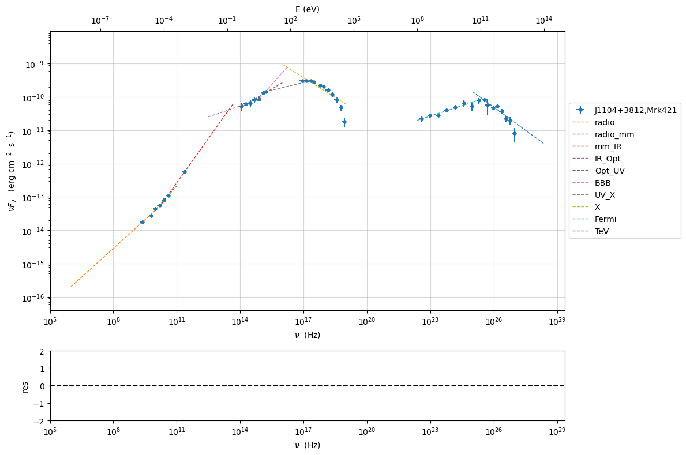

import warnings
warnings.filterwarnings('ignore')
import numpy as np
import jetset
print('tested on jetset',jetset.__version__)
tested on jetset 1.2.0
Depending parameters¶
In the following we show how to link parameters in the same model or among different models, and how to make a paramter depending on other parameters according to a mathematical expression.
Example: linked paramters for EBL¶
from jetset.jet_model import Jet
from jetset.template_2Dmodel import EBLAbsorptionTemplate
from jetset.model_manager import FitModel
my_jet = Jet(electron_distribution='lppl', name='jet_flaring')
my_jet.parameters.z_cosm.val = 0.01
ebl_franceschini = EBLAbsorptionTemplate.from_name('Franceschini_2008')
composite_model = FitModel(nu_size=500, name='EBL corrected')
composite_model.add_component(my_jet)
composite_model.add_component(ebl_franceschini)
composite_model.show_pars()
composite_model.link_par(par_name='z_cosm', from_model='Franceschini_2008', to_model='jet_flaring')
v=0.03001
my_jet.parameters.z_cosm.val = v
assert (composite_model.Franceschini_2008.parameters.z_cosm.val==v)
assert (composite_model.Franceschini_2008.parameters.z_cosm.linked==True)
composite_model.composite_expr = '%s*%s'%(my_jet.name,ebl_franceschini.name)
composite_model.eval()
#if plot is True:
# composite_model.plot_model()
composite_model.save_model('ebl_jet.pkl')
new_composite_model=FitModel.load_model('ebl_jet.pkl')
new_composite_model.show_pars()
v=2.0
new_composite_model.jet_flaring.parameters.z_cosm.val=v
print('new_composite_model.Franceschini_2008.parameters.z_cosm.val',new_composite_model.Franceschini_2008.parameters.z_cosm.val,'v',v)
assert (new_composite_model.Franceschini_2008.parameters.z_cosm.val == v)
assert (new_composite_model.Franceschini_2008.parameters.z_cosm.linked == True)
| model name | name | par type | units | val | phys. bound. min | phys. bound. max | log | frozen |
|---|---|---|---|---|---|---|---|---|
| jet_flaring | R | region_size | cm | 5.000000e+15 | 1.000000e+03 | 1.000000e+30 | False | False |
| jet_flaring | R_H | region_position | cm | 1.000000e+17 | 0.000000e+00 | -- | False | True |
| jet_flaring | B | magnetic_field | gauss | 1.000000e-01 | 0.000000e+00 | -- | False | False |
| jet_flaring | beam_obj | beaming | lorentz-factor* | 1.000000e+01 | 1.000000e-04 | -- | False | False |
| jet_flaring | z_cosm | redshift | 1.000000e-02 | 0.000000e+00 | -- | False | False | |
| jet_flaring | gmin | low-energy-cut-off | lorentz-factor* | 2.000000e+00 | 1.000000e+00 | 1.000000e+09 | False | False |
| jet_flaring | gmax | high-energy-cut-off | lorentz-factor* | 1.000000e+06 | 1.000000e+00 | 1.000000e+15 | False | False |
| jet_flaring | N | emitters_density | 1 / cm3 | 1.000000e+02 | 0.000000e+00 | -- | False | False |
| jet_flaring | gamma0_log_parab | turn-over-energy | lorentz-factor* | 1.000000e+04 | 1.000000e+00 | 1.000000e+09 | False | False |
| jet_flaring | s | LE_spectral_slope | 2.000000e+00 | -1.000000e+01 | 1.000000e+01 | False | False | |
| jet_flaring | r | spectral_curvature | 4.000000e-01 | -1.500000e+01 | 1.500000e+01 | False | False | |
| Franceschini_2008 | z_cosm | redshift | 1.000000e+00 | 0.000000e+00 | -- | False | True |
==> par: z_cosm from model: Franceschini_2008 linked to same parameter in model jet_flaring
==> par: z_cosm from model: Franceschini_2008 linked to same parameter in model jet_flaring
| model name | name | par type | units | val | phys. bound. min | phys. bound. max | log | frozen |
|---|---|---|---|---|---|---|---|---|
| jet_flaring | gmin | low-energy-cut-off | lorentz-factor* | 2.000000e+00 | 1.000000e+00 | 1.000000e+09 | False | False |
| jet_flaring | gmax | high-energy-cut-off | lorentz-factor* | 1.000000e+06 | 1.000000e+00 | 1.000000e+15 | False | False |
| jet_flaring | N | emitters_density | 1 / cm3 | 1.000000e+02 | 0.000000e+00 | -- | False | False |
| jet_flaring | gamma0_log_parab | turn-over-energy | lorentz-factor* | 1.000000e+04 | 1.000000e+00 | 1.000000e+09 | False | False |
| jet_flaring | s | LE_spectral_slope | 2.000000e+00 | -1.000000e+01 | 1.000000e+01 | False | False | |
| jet_flaring | r | spectral_curvature | 4.000000e-01 | -1.500000e+01 | 1.500000e+01 | False | False | |
| jet_flaring | R | region_size | cm | 5.000000e+15 | 1.000000e+03 | 1.000000e+30 | False | False |
| jet_flaring | R_H | region_position | cm | 1.000000e+17 | 0.000000e+00 | -- | False | True |
| jet_flaring | B | magnetic_field | gauss | 1.000000e-01 | 0.000000e+00 | -- | False | False |
| jet_flaring | beam_obj | beaming | lorentz-factor* | 1.000000e+01 | 1.000000e-04 | -- | False | False |
| jet_flaring | z_cosm(M) | redshift | 3.001000e-02 | 0.000000e+00 | -- | False | False | |
| Franceschini_2008 | z_cosm(L,jet_flaring) | redshift | -- | -- | -- | False | True |
new_composite_model.Franceschini_2008.parameters.z_cosm.val 2.0 v 2.0
Example: depending pars for bkn power-law emitters¶
here we create a custom bkn distribution where we impose a
functional dependence among the low and high-energy spectral index.
from jetset.jet_emitters import EmittersDistribution
import numpy as np
from jetset.jet_model import Jet
j = Jet(emitters_distribution='bkn')
j.parameters
| model name | name | par type | units | val | phys. bound. min | phys. bound. max | log | frozen |
|---|---|---|---|---|---|---|---|---|
| jet_leptonic | R | region_size | cm | 5.000000e+15 | 1.000000e+03 | 1.000000e+30 | False | False |
| jet_leptonic | R_H | region_position | cm | 1.000000e+17 | 0.000000e+00 | -- | False | True |
| jet_leptonic | B | magnetic_field | gauss | 1.000000e-01 | 0.000000e+00 | -- | False | False |
| jet_leptonic | beam_obj | beaming | lorentz-factor* | 1.000000e+01 | 1.000000e-04 | -- | False | False |
| jet_leptonic | z_cosm | redshift | 1.000000e-01 | 0.000000e+00 | -- | False | False | |
| jet_leptonic | gmin | low-energy-cut-off | lorentz-factor* | 2.000000e+00 | 1.000000e+00 | 1.000000e+09 | False | False |
| jet_leptonic | gmax | high-energy-cut-off | lorentz-factor* | 1.000000e+06 | 1.000000e+00 | 1.000000e+15 | False | False |
| jet_leptonic | N | emitters_density | 1 / cm3 | 1.000000e+02 | 0.000000e+00 | -- | False | False |
| jet_leptonic | gamma_break | turn-over-energy | lorentz-factor* | 1.000000e+04 | 1.000000e+00 | 1.000000e+09 | False | False |
| jet_leptonic | p | LE_spectral_slope | 2.500000e+00 | -1.000000e+01 | 1.000000e+01 | False | False | |
| jet_leptonic | p_1 | HE_spectral_slope | 3.500000e+00 | -1.000000e+01 | 1.000000e+01 | False | False |
None
the functional dependence can be provided by a python function, where
the argument (p in this case) is the same name as the parameter:
def f_p(p):
return p+1
j.make_dependent_par(par='p_1',depends_on=['p'],par_expr=f_p)
j.parameters.p.val=2
np.testing.assert_allclose(j.parameters.p_1.val, j.parameters.p.val + 1)
j.parameters
==> par p_1 is now depending on ['p'] according to expr:p_1 =
def f_p(p):
return p+1
| model name | name | par type | units | val | phys. bound. min | phys. bound. max | log | frozen |
|---|---|---|---|---|---|---|---|---|
| jet_leptonic | R | region_size | cm | 5.000000e+15 | 1.000000e+03 | 1.000000e+30 | False | False |
| jet_leptonic | R_H | region_position | cm | 1.000000e+17 | 0.000000e+00 | -- | False | True |
| jet_leptonic | B | magnetic_field | gauss | 1.000000e-01 | 0.000000e+00 | -- | False | False |
| jet_leptonic | beam_obj | beaming | lorentz-factor* | 1.000000e+01 | 1.000000e-04 | -- | False | False |
| jet_leptonic | z_cosm | redshift | 1.000000e-01 | 0.000000e+00 | -- | False | False | |
| jet_leptonic | gmin | low-energy-cut-off | lorentz-factor* | 2.000000e+00 | 1.000000e+00 | 1.000000e+09 | False | False |
| jet_leptonic | gmax | high-energy-cut-off | lorentz-factor* | 1.000000e+06 | 1.000000e+00 | 1.000000e+15 | False | False |
| jet_leptonic | N | emitters_density | 1 / cm3 | 1.000000e+02 | 0.000000e+00 | -- | False | False |
| jet_leptonic | gamma_break | turn-over-energy | lorentz-factor* | 1.000000e+04 | 1.000000e+00 | 1.000000e+09 | False | False |
| jet_leptonic | p(M) | LE_spectral_slope | 2.000000e+00 | -1.000000e+01 | 1.000000e+01 | False | False | |
| jet_leptonic | *p_1(D,p) | HE_spectral_slope | 3.000000e+00 | -1.000000e+01 | 1.000000e+01 | False | True |
None
as you can notice, now a message is shown describing the dependence of the parameters
It is also possible to set the dependence function as a string that can be evaluated
j.make_dependent_par(par='p_1',depends_on=['p'],par_expr='p+1')
j.parameters.p.val=2
np.testing.assert_allclose(j.parameters.p_1.val, j.parameters.p.val + 1)
j.parameters
==> par p_1 is now depending on ['p'] according to expr:p_1 =
p+1
| model name | name | par type | units | val | phys. bound. min | phys. bound. max | log | frozen |
|---|---|---|---|---|---|---|---|---|
| jet_leptonic | R | region_size | cm | 5.000000e+15 | 1.000000e+03 | 1.000000e+30 | False | False |
| jet_leptonic | R_H | region_position | cm | 1.000000e+17 | 0.000000e+00 | -- | False | True |
| jet_leptonic | B | magnetic_field | gauss | 1.000000e-01 | 0.000000e+00 | -- | False | False |
| jet_leptonic | beam_obj | beaming | lorentz-factor* | 1.000000e+01 | 1.000000e-04 | -- | False | False |
| jet_leptonic | z_cosm | redshift | 1.000000e-01 | 0.000000e+00 | -- | False | False | |
| jet_leptonic | gmin | low-energy-cut-off | lorentz-factor* | 2.000000e+00 | 1.000000e+00 | 1.000000e+09 | False | False |
| jet_leptonic | gmax | high-energy-cut-off | lorentz-factor* | 1.000000e+06 | 1.000000e+00 | 1.000000e+15 | False | False |
| jet_leptonic | N | emitters_density | 1 / cm3 | 1.000000e+02 | 0.000000e+00 | -- | False | False |
| jet_leptonic | gamma_break | turn-over-energy | lorentz-factor* | 1.000000e+04 | 1.000000e+00 | 1.000000e+09 | False | False |
| jet_leptonic | p(M) | LE_spectral_slope | 2.000000e+00 | -1.000000e+01 | 1.000000e+01 | False | False | |
| jet_leptonic | *p_1(D,p) | HE_spectral_slope | 3.000000e+00 | -1.000000e+01 | 1.000000e+01 | False | True |
None
In principle, you can use strings for short expressions, and functions for more complicated formulas.
You can print the actual expression/function for the depending parameter
using the print_par_expr method:
j.parameters.p_1.print_par_expr
==> par p_1 is depending on ['p'] according to expr: p_1 =
p+1
j.save_model('jet.pkl')
new_jet=Jet.load_model('jet.pkl')
==> par p_1 is now depending on ['p'] according to expr:p_1 =
p+1
| model name | name | par type | units | val | phys. bound. min | phys. bound. max | log | frozen |
|---|---|---|---|---|---|---|---|---|
| jet_leptonic | gmin | low-energy-cut-off | lorentz-factor* | 2.000000e+00 | 1.000000e+00 | 1.000000e+09 | False | False |
| jet_leptonic | gmax | high-energy-cut-off | lorentz-factor* | 1.000000e+06 | 1.000000e+00 | 1.000000e+15 | False | False |
| jet_leptonic | N | emitters_density | 1 / cm3 | 1.000000e+02 | 0.000000e+00 | -- | False | False |
| jet_leptonic | gamma_break | turn-over-energy | lorentz-factor* | 1.000000e+04 | 1.000000e+00 | 1.000000e+09 | False | False |
| jet_leptonic | p(M) | LE_spectral_slope | 2.000000e+00 | -1.000000e+01 | 1.000000e+01 | False | False | |
| jet_leptonic | *p_1(D,p) | HE_spectral_slope | 3.000000e+00 | -1.000000e+01 | 1.000000e+01 | False | True | |
| jet_leptonic | R | region_size | cm | 5.000000e+15 | 1.000000e+03 | 1.000000e+30 | False | False |
| jet_leptonic | R_H | region_position | cm | 1.000000e+17 | 0.000000e+00 | -- | False | True |
| jet_leptonic | B | magnetic_field | gauss | 1.000000e-01 | 0.000000e+00 | -- | False | False |
| jet_leptonic | beam_obj | beaming | lorentz-factor* | 1.000000e+01 | 1.000000e-04 | -- | False | False |
| jet_leptonic | z_cosm | redshift | 1.000000e-01 | 0.000000e+00 | -- | False | False |
new_jet.parameters.p.val=2.5
np.testing.assert_allclose(new_jet.parameters.p_1.val, new_jet.parameters.p.val + 1)
new_jet.parameters
| model name | name | par type | units | val | phys. bound. min | phys. bound. max | log | frozen |
|---|---|---|---|---|---|---|---|---|
| jet_leptonic | gmin | low-energy-cut-off | lorentz-factor* | 2.000000e+00 | 1.000000e+00 | 1.000000e+09 | False | False |
| jet_leptonic | gmax | high-energy-cut-off | lorentz-factor* | 1.000000e+06 | 1.000000e+00 | 1.000000e+15 | False | False |
| jet_leptonic | N | emitters_density | 1 / cm3 | 1.000000e+02 | 0.000000e+00 | -- | False | False |
| jet_leptonic | gamma_break | turn-over-energy | lorentz-factor* | 1.000000e+04 | 1.000000e+00 | 1.000000e+09 | False | False |
| jet_leptonic | p(M) | LE_spectral_slope | 2.500000e+00 | -1.000000e+01 | 1.000000e+01 | False | False | |
| jet_leptonic | *p_1(D,p) | HE_spectral_slope | 3.500000e+00 | -1.000000e+01 | 1.000000e+01 | False | True | |
| jet_leptonic | R | region_size | cm | 5.000000e+15 | 1.000000e+03 | 1.000000e+30 | False | False |
| jet_leptonic | R_H | region_position | cm | 1.000000e+17 | 0.000000e+00 | -- | False | True |
| jet_leptonic | B | magnetic_field | gauss | 1.000000e-01 | 0.000000e+00 | -- | False | False |
| jet_leptonic | beam_obj | beaming | lorentz-factor* | 1.000000e+01 | 1.000000e-04 | -- | False | False |
| jet_leptonic | z_cosm | redshift | 1.000000e-01 | 0.000000e+00 | -- | False | False |
None
Example depending par: Building a Jet model with B function of R_H and R_0¶
In this example we create a fuctional dependence among the paramters
B, R_H introducing user custom pararameters. Wewant that the
value of the mangentic field in the jet is a function or R_H, and of
the initial value of B=B0 at R=R_H0, according to the
expression:
\(B=B_0(R_0/R_H)^{1.1}\)
jet=Jet(emitters_distribution='plc')
fit_model_lsb=FitModel( jet=jet, name='SSC-best-fit-lsb',template=None)
fit_model_lsb.jet_leptonic.parameters.beam_obj.fit_range = [5, 50]
fit_model_lsb.jet_leptonic.parameters.R_H.val=5E17
fit_model_lsb.jet_leptonic.parameters.R_H.frozen=False
fit_model_lsb.jet_leptonic.parameters.R_H.fit_range = [1E15, 1E19]
fit_model_lsb.jet_leptonic.parameters.R.fit_range = [10 ** 15.5, 10 ** 17.5]
fit_model_lsb.jet_leptonic.add_user_par(name='B0',units='G',val=1E3,val_min=0,val_max=None)
fit_model_lsb.jet_leptonic.add_user_par(name='R0', units='cm', val=5E13, val_min=0, val_max=None)
fit_model_lsb.jet_leptonic.add_user_par(name='m_B', val=1, val_min=1, val_max=2)
fit_model_lsb.jet_leptonic.parameters.R0.frozen=True
fit_model_lsb.jet_leptonic.parameters.B0.frozen=True
def par_func(R0,B0,R_H,m_B):
return B0*np.power((R0/R_H),m_B)
fit_model_lsb.jet_leptonic.make_dependent_par(par='B', depends_on=['B0', 'R0', 'R_H','m_B'], par_expr=par_func)
B0=fit_model_lsb.jet_leptonic.parameters.B0.val
R0 = fit_model_lsb.jet_leptonic.parameters.R0.val
R_H = fit_model_lsb.jet_leptonic.parameters.R_H.val
m_B= fit_model_lsb.jet_leptonic.parameters.m_B.val
np.testing.assert_allclose(fit_model_lsb.jet_leptonic.parameters.B.val, par_func(R0,B0,R_H,m_B))
==> par B is now depending on ['B0', 'R0', 'R_H', 'm_B'] according to expr:B =
def par_func(R0,B0,R_H,m_B):
return B0*np.power((R0/R_H),m_B)
fit_model_lsb.jet_leptonic.parameters
| model name | name | par type | units | val | phys. bound. min | phys. bound. max | log | frozen |
|---|---|---|---|---|---|---|---|---|
| jet_leptonic | R | region_size | cm | 5.000000e+15 | 1.000000e+03 | 1.000000e+30 | False | False |
| jet_leptonic | R_H(M) | region_position | cm | 5.000000e+17 | 0.000000e+00 | -- | False | False |
| jet_leptonic | *B(D,m_B) | magnetic_field | gauss | 1.000000e-01 | 0.000000e+00 | -- | False | True |
| jet_leptonic | beam_obj | beaming | lorentz-factor* | 1.000000e+01 | 1.000000e-04 | -- | False | False |
| jet_leptonic | z_cosm | redshift | 1.000000e-01 | 0.000000e+00 | -- | False | False | |
| jet_leptonic | gmin | low-energy-cut-off | lorentz-factor* | 2.000000e+00 | 1.000000e+00 | 1.000000e+09 | False | False |
| jet_leptonic | gmax | high-energy-cut-off | lorentz-factor* | 1.000000e+06 | 1.000000e+00 | 1.000000e+15 | False | False |
| jet_leptonic | N | emitters_density | 1 / cm3 | 1.000000e+02 | 0.000000e+00 | -- | False | False |
| jet_leptonic | gamma_cut | turn-over-energy | lorentz-factor* | 1.000000e+04 | 1.000000e+00 | 1.000000e+09 | False | False |
| jet_leptonic | p | LE_spectral_slope | 2.000000e+00 | -1.000000e+01 | 1.000000e+01 | False | False | |
| jet_leptonic | B0(M) | user_defined | G | 1.000000e+03 | 0.000000e+00 | -- | False | True |
| jet_leptonic | R0(M) | user_defined | cm | 5.000000e+13 | 0.000000e+00 | -- | False | True |
| jet_leptonic | m_B(M) | user_defined | 1.000000e+00 | 1.000000e+00 | 2.000000e+00 | False | False |
None
fit_model_lsb.jet_leptonic.parameters
| model name | name | par type | units | val | phys. bound. min | phys. bound. max | log | frozen |
|---|---|---|---|---|---|---|---|---|
| jet_leptonic | R | region_size | cm | 5.000000e+15 | 1.000000e+03 | 1.000000e+30 | False | False |
| jet_leptonic | R_H(M) | region_position | cm | 5.000000e+17 | 0.000000e+00 | -- | False | False |
| jet_leptonic | *B(D,m_B) | magnetic_field | gauss | 1.000000e-01 | 0.000000e+00 | -- | False | True |
| jet_leptonic | beam_obj | beaming | lorentz-factor* | 1.000000e+01 | 1.000000e-04 | -- | False | False |
| jet_leptonic | z_cosm | redshift | 1.000000e-01 | 0.000000e+00 | -- | False | False | |
| jet_leptonic | gmin | low-energy-cut-off | lorentz-factor* | 2.000000e+00 | 1.000000e+00 | 1.000000e+09 | False | False |
| jet_leptonic | gmax | high-energy-cut-off | lorentz-factor* | 1.000000e+06 | 1.000000e+00 | 1.000000e+15 | False | False |
| jet_leptonic | N | emitters_density | 1 / cm3 | 1.000000e+02 | 0.000000e+00 | -- | False | False |
| jet_leptonic | gamma_cut | turn-over-energy | lorentz-factor* | 1.000000e+04 | 1.000000e+00 | 1.000000e+09 | False | False |
| jet_leptonic | p | LE_spectral_slope | 2.000000e+00 | -1.000000e+01 | 1.000000e+01 | False | False | |
| jet_leptonic | B0(M) | user_defined | G | 1.000000e+03 | 0.000000e+00 | -- | False | True |
| jet_leptonic | R0(M) | user_defined | cm | 5.000000e+13 | 0.000000e+00 | -- | False | True |
| jet_leptonic | m_B(M) | user_defined | 1.000000e+00 | 1.000000e+00 | 2.000000e+00 | False | False |
None
fit_model_lsb.save_model('test.pkl')
fit_model_lsb=FitModel.load_model('test.pkl')
==> par B is now depending on ['B0', 'R0', 'R_H', 'm_B'] according to expr:B =
def par_func(R0,B0,R_H,m_B):
return B0*np.power((R0/R_H),m_B)
B0=fit_model_lsb.jet_leptonic.parameters.B0.val
R0 = fit_model_lsb.jet_leptonic.parameters.R0.val
R_H = fit_model_lsb.jet_leptonic.parameters.R_H.val
m_B= fit_model_lsb.jet_leptonic.parameters.m_B.val
np.testing.assert_allclose(fit_model_lsb.jet_leptonic.parameters.B.val, par_func(R0,B0,R_H,m_B))
Example depending par: fitting with a Jet model with depending pars¶
In this example we show how to use the previous model during a Fit
from jetset.test_data_helper import test_SEDs
from jetset.data_loader import ObsData,Data
from jetset.plot_sedfit import PlotSED
from jetset.test_data_helper import test_SEDs
data=Data.from_file(test_SEDs[1])
sed_data=ObsData(data_table=data)
sed_data.group_data(bin_width=0.2)
sed_data.add_systematics(0.1,[10.**6,10.**29])
p=sed_data.plot_sed()
================================================================================ * binning data * ---> N bins= 89 ---> bin_widht= 0.2 ================================================================================

from jetset.sed_shaper import SEDShape
my_shape=SEDShape(sed_data)
my_shape.eval_indices(minimizer='lsb',silent=True)
p=my_shape.plot_indices()
================================================================================ * evaluating spectral indices for data * ================================================================================
mm,best_fit=my_shape.sync_fit(check_host_gal_template=False,
Ep_start=None,
minimizer='lsb',
silent=True,
fit_range=[10.,21.])
================================================================================ * Log-Polynomial fitting of the synchrotron component * ---> first blind fit run, fit range: [10.0, 21.0] ---> class: HSPTable length=4
| model name | name | val | bestfit val | err + | err - | start val | fit range min | fit range max | frozen |
|---|---|---|---|---|---|---|---|---|---|
| LogCubic | b | -1.545300e-01 | -1.545300e-01 | 9.534795e-03 | -- | -1.000000e+00 | -1.000000e+01 | 0.000000e+00 | False |
| LogCubic | c | -1.023245e-02 | -1.023245e-02 | 1.433073e-03 | -- | -1.000000e+00 | -1.000000e+01 | 1.000000e+01 | False |
| LogCubic | Ep | 1.672267e+01 | 1.672267e+01 | 4.139942e-02 | -- | 1.667039e+01 | 0.000000e+00 | 3.000000e+01 | False |
| LogCubic | Sp | -9.491659e+00 | -9.491659e+00 | 2.515285e-02 | -- | -1.000000e+01 | -3.000000e+01 | 0.000000e+00 | False |
---> sync nu_p=+1.672267e+01 (err=+4.139942e-02) nuFnu_p=-9.491659e+00 (err=+2.515285e-02) curv.=-1.545300e-01 (err=+9.534795e-03)
================================================================================
my_shape.IC_fit(fit_range=[23.,29.],minimizer='minuit',silent=True)
p=my_shape.plot_shape_fit()
p.setlim(y_min=1E-15)
================================================================================ * Log-Polynomial fitting of the IC component * ---> fit range: [23.0, 29.0] ---> LogCubic fitTable length=4
| model name | name | val | bestfit val | err + | err - | start val | fit range min | fit range max | frozen |
|---|---|---|---|---|---|---|---|---|---|
| LogCubic | b | -2.098186e-01 | -2.098186e-01 | 3.133032e-02 | -- | -1.000000e+00 | -1.000000e+01 | 0.000000e+00 | False |
| LogCubic | c | -4.661868e-02 | -4.661868e-02 | 2.178352e-02 | -- | -1.000000e+00 | -1.000000e+01 | 1.000000e+01 | False |
| LogCubic | Ep | 2.524926e+01 | 2.524926e+01 | 1.147759e-01 | -- | 2.529412e+01 | 0.000000e+00 | 3.000000e+01 | False |
| LogCubic | Sp | -1.011085e+01 | -1.011085e+01 | 3.498963e-02 | -- | -1.000000e+01 | -3.000000e+01 | 0.000000e+00 | False |
---> IC nu_p=+2.524926e+01 (err=+1.147759e-01) nuFnu_p=-1.011085e+01 (err=+3.498963e-02) curv.=-2.098186e-01 (err=+3.133032e-02)
================================================================================
from jetset.obs_constrain import ObsConstrain
from jetset.model_manager import FitModel
sed_obspar=ObsConstrain(beaming=25,
B_range=[0.001,0.1],
distr_e='lppl',
t_var_sec=3*86400,
nu_cut_IR=1E12,
SEDShape=my_shape)
prefit_jet=sed_obspar.constrain_SSC_model(electron_distribution_log_values=False,silent=True)
prefit_jet.save_model('prefit_jet.pkl')
================================================================================ * constrains parameters from observable *Table length=11
| model name | name | par type | units | val | phys. bound. min | phys. bound. max | log | frozen |
|---|---|---|---|---|---|---|---|---|
| jet_leptonic | R | region_size | cm | 3.112712e+16 | 1.000000e+03 | 1.000000e+30 | False | False |
| jet_leptonic | R_H | region_position | cm | 1.000000e+17 | 0.000000e+00 | -- | False | True |
| jet_leptonic | B | magnetic_field | gauss | 5.050000e-02 | 0.000000e+00 | -- | False | False |
| jet_leptonic | beam_obj | beaming | lorentz-factor* | 2.500000e+01 | 1.000000e-04 | -- | False | False |
| jet_leptonic | z_cosm | redshift | 3.080000e-02 | 0.000000e+00 | -- | False | False | |
| jet_leptonic | gmin | low-energy-cut-off | lorentz-factor* | 4.697542e+02 | 1.000000e+00 | 1.000000e+09 | False | False |
| jet_leptonic | gmax | high-energy-cut-off | lorentz-factor* | 1.373160e+06 | 1.000000e+00 | 1.000000e+15 | False | False |
| jet_leptonic | N | emitters_density | 1 / cm3 | 9.060842e-01 | 0.000000e+00 | -- | False | False |
| jet_leptonic | gamma0_log_parab | turn-over-energy | lorentz-factor* | 3.188500e+04 | 1.000000e+00 | 1.000000e+09 | False | False |
| jet_leptonic | s | LE_spectral_slope | 2.181578e+00 | -1.000000e+01 | 1.000000e+01 | False | False | |
| jet_leptonic | r | spectral_curvature | 7.726502e-01 | -1.500000e+01 | 1.500000e+01 | False | False |
================================================================================
from jetset.minimizer import fit_SED,ModelMinimizer
from jetset.model_manager import FitModel
from jetset.jet_model import Jet
prefit_jet=Jet.load_model('prefit_jet.pkl')
| model name | name | par type | units | val | phys. bound. min | phys. bound. max | log | frozen |
|---|---|---|---|---|---|---|---|---|
| jet_leptonic | gmin | low-energy-cut-off | lorentz-factor* | 4.697542e+02 | 1.000000e+00 | 1.000000e+09 | False | False |
| jet_leptonic | gmax | high-energy-cut-off | lorentz-factor* | 1.373160e+06 | 1.000000e+00 | 1.000000e+15 | False | False |
| jet_leptonic | N | emitters_density | 1 / cm3 | 9.060842e-01 | 0.000000e+00 | -- | False | False |
| jet_leptonic | gamma0_log_parab | turn-over-energy | lorentz-factor* | 3.188500e+04 | 1.000000e+00 | 1.000000e+09 | False | False |
| jet_leptonic | s | LE_spectral_slope | 2.181578e+00 | -1.000000e+01 | 1.000000e+01 | False | False | |
| jet_leptonic | r | spectral_curvature | 7.726502e-01 | -1.500000e+01 | 1.500000e+01 | False | False | |
| jet_leptonic | R | region_size | cm | 3.112712e+16 | 1.000000e+03 | 1.000000e+30 | False | False |
| jet_leptonic | R_H | region_position | cm | 1.000000e+17 | 0.000000e+00 | -- | False | True |
| jet_leptonic | B | magnetic_field | gauss | 5.050000e-02 | 0.000000e+00 | -- | False | False |
| jet_leptonic | beam_obj | beaming | lorentz-factor* | 2.500000e+01 | 1.000000e-04 | -- | False | False |
| jet_leptonic | z_cosm | redshift | 3.080000e-02 | 0.000000e+00 | -- | False | False |
fit_model=FitModel( jet=prefit_jet, name='SSC-best-fit-lsb',template=None)
fit_model.parameters
| model name | name | par type | units | val | phys. bound. min | phys. bound. max | log | frozen |
|---|---|---|---|---|---|---|---|---|
| jet_leptonic | gmin | low-energy-cut-off | lorentz-factor* | 4.697542e+02 | 1.000000e+00 | 1.000000e+09 | False | False |
| jet_leptonic | gmax | high-energy-cut-off | lorentz-factor* | 1.373160e+06 | 1.000000e+00 | 1.000000e+15 | False | False |
| jet_leptonic | N | emitters_density | 1 / cm3 | 9.060842e-01 | 0.000000e+00 | -- | False | False |
| jet_leptonic | gamma0_log_parab | turn-over-energy | lorentz-factor* | 3.188500e+04 | 1.000000e+00 | 1.000000e+09 | False | False |
| jet_leptonic | s | LE_spectral_slope | 2.181578e+00 | -1.000000e+01 | 1.000000e+01 | False | False | |
| jet_leptonic | r | spectral_curvature | 7.726502e-01 | -1.500000e+01 | 1.500000e+01 | False | False | |
| jet_leptonic | R | region_size | cm | 3.112712e+16 | 1.000000e+03 | 1.000000e+30 | False | False |
| jet_leptonic | R_H | region_position | cm | 1.000000e+17 | 0.000000e+00 | -- | False | True |
| jet_leptonic | B | magnetic_field | gauss | 5.050000e-02 | 0.000000e+00 | -- | False | False |
| jet_leptonic | beam_obj | beaming | lorentz-factor* | 2.500000e+01 | 1.000000e-04 | -- | False | False |
| jet_leptonic | z_cosm | redshift | 3.080000e-02 | 0.000000e+00 | -- | False | False |
None
fit_model.jet_leptonic.parameters.beam_obj.fit_range = [5, 50]
fit_model.jet_leptonic.parameters.R_H.val=5E17
fit_model.jet_leptonic.parameters.R_H.frozen=False
fit_model.jet_leptonic.parameters.R_H.fit_range = [1E15, 1E19]
fit_model.jet_leptonic.parameters.R.fit_range = [10 ** 15.5, 10 ** 17.5]
fit_model.jet_leptonic.parameters.gamma0_log_parab.fit_range = [1E3,1E6]
fit_model.jet_leptonic.parameters.gmin.fit_range = [10,1000]
fit_model.jet_leptonic.parameters.gmax.fit_range = [1E5,1E8]
fit_model.jet_leptonic.add_user_par(name='B0',units='G',val=1E3,val_min=0,val_max=None)
fit_model.jet_leptonic.add_user_par(name='R0', units='cm', val=5E13, val_min=0, val_max=None)
fit_model.jet_leptonic.add_user_par(name='m_B', val=1, val_min=1, val_max=2)
fit_model.jet_leptonic.parameters.R0.frozen=True
fit_model.jet_leptonic.parameters.B0.frozen=True
def par_func(R0,B0,R_H,m_B):
return B0*np.power((R0/R_H),m_B)
fit_model.jet_leptonic.make_dependent_par(par='B', depends_on=['B0', 'R0', 'R_H','m_B'], par_expr=par_func)
fit_model.parameters
==> par B is now depending on ['B0', 'R0', 'R_H', 'm_B'] according to expr:B =
def par_func(R0,B0,R_H,m_B):
return B0*np.power((R0/R_H),m_B)
| model name | name | par type | units | val | phys. bound. min | phys. bound. max | log | frozen |
|---|---|---|---|---|---|---|---|---|
| jet_leptonic | gmin | low-energy-cut-off | lorentz-factor* | 4.697542e+02 | 1.000000e+00 | 1.000000e+09 | False | False |
| jet_leptonic | gmax | high-energy-cut-off | lorentz-factor* | 1.373160e+06 | 1.000000e+00 | 1.000000e+15 | False | False |
| jet_leptonic | N | emitters_density | 1 / cm3 | 9.060842e-01 | 0.000000e+00 | -- | False | False |
| jet_leptonic | gamma0_log_parab | turn-over-energy | lorentz-factor* | 3.188500e+04 | 1.000000e+00 | 1.000000e+09 | False | False |
| jet_leptonic | s | LE_spectral_slope | 2.181578e+00 | -1.000000e+01 | 1.000000e+01 | False | False | |
| jet_leptonic | r | spectral_curvature | 7.726502e-01 | -1.500000e+01 | 1.500000e+01 | False | False | |
| jet_leptonic | R | region_size | cm | 3.112712e+16 | 1.000000e+03 | 1.000000e+30 | False | False |
| jet_leptonic | R_H(M) | region_position | cm | 5.000000e+17 | 0.000000e+00 | -- | False | False |
| jet_leptonic | *B(D,m_B) | magnetic_field | gauss | 1.000000e-01 | 0.000000e+00 | -- | False | True |
| jet_leptonic | beam_obj | beaming | lorentz-factor* | 2.500000e+01 | 1.000000e-04 | -- | False | False |
| jet_leptonic | z_cosm | redshift | 3.080000e-02 | 0.000000e+00 | -- | False | False | |
| jet_leptonic | B0(M) | user_defined | G | 1.000000e+03 | 0.000000e+00 | -- | False | True |
| jet_leptonic | R0(M) | user_defined | cm | 5.000000e+13 | 0.000000e+00 | -- | False | True |
| jet_leptonic | m_B(M) | user_defined | 1.000000e+00 | 1.000000e+00 | 2.000000e+00 | False | False |
None
%matplotlib inline
import matplotlib.pyplot as plt
plt.figure(dpi=150)
R_H_array=np.logspace(13,18,100)
B_array=np.zeros(R_H_array.shape)
for ID,R_H in enumerate(R_H_array):
fit_model_lsb.jet_leptonic.parameters.R_H.val=R_H
B_array[ID]=fit_model_lsb.jet_leptonic.parameters.B.val
plt.loglog(R_H_array,B_array)
plt.xlabel('R_H (cm)')
plt.ylabel('B (G)')
Text(0, 0.5, 'B (G)')

fit_model.jet_leptonic.parameters.R_H.val=5E17
fit_model.parameters
| model name | name | par type | units | val | phys. bound. min | phys. bound. max | log | frozen |
|---|---|---|---|---|---|---|---|---|
| jet_leptonic | gmin | low-energy-cut-off | lorentz-factor* | 4.697542e+02 | 1.000000e+00 | 1.000000e+09 | False | False |
| jet_leptonic | gmax | high-energy-cut-off | lorentz-factor* | 1.373160e+06 | 1.000000e+00 | 1.000000e+15 | False | False |
| jet_leptonic | N | emitters_density | 1 / cm3 | 9.060842e-01 | 0.000000e+00 | -- | False | False |
| jet_leptonic | gamma0_log_parab | turn-over-energy | lorentz-factor* | 3.188500e+04 | 1.000000e+00 | 1.000000e+09 | False | False |
| jet_leptonic | s | LE_spectral_slope | 2.181578e+00 | -1.000000e+01 | 1.000000e+01 | False | False | |
| jet_leptonic | r | spectral_curvature | 7.726502e-01 | -1.500000e+01 | 1.500000e+01 | False | False | |
| jet_leptonic | R | region_size | cm | 3.112712e+16 | 1.000000e+03 | 1.000000e+30 | False | False |
| jet_leptonic | R_H(M) | region_position | cm | 5.000000e+17 | 0.000000e+00 | -- | False | False |
| jet_leptonic | *B(D,m_B) | magnetic_field | gauss | 1.000000e-01 | 0.000000e+00 | -- | False | True |
| jet_leptonic | beam_obj | beaming | lorentz-factor* | 2.500000e+01 | 1.000000e-04 | -- | False | False |
| jet_leptonic | z_cosm | redshift | 3.080000e-02 | 0.000000e+00 | -- | False | False | |
| jet_leptonic | B0(M) | user_defined | G | 1.000000e+03 | 0.000000e+00 | -- | False | True |
| jet_leptonic | R0(M) | user_defined | cm | 5.000000e+13 | 0.000000e+00 | -- | False | True |
| jet_leptonic | m_B(M) | user_defined | 1.000000e+00 | 1.000000e+00 | 2.000000e+00 | False | False |
None
As a resuslt of the best fit modeling, we are able to determine the
value of R_H. We now perform the fit with minuit to get a better
estimate of the errors
model_minimizer_minuit=ModelMinimizer('minuit')
best_fit_minuit=model_minimizer_minuit.fit(fit_model,
sed_data,
1E11,
1E29,
fitname='SSC-best-fit-minuit',
repeat=3)
filtering data in fit range = [1.000000e+11,1.000000e+29] data length 35 ================================================================================ * start fit process * ----- fit run: 0
0it [00:00, ?it/s]
- best chisq=1.55264e+01
fit run: 1
- old chisq=1.55264e+01
0it [00:00, ?it/s]
- best chisq=1.55263e+01
fit run: 2
- old chisq=1.55263e+01
0it [00:00, ?it/s]
- best chisq=1.55263e+01
-------------------------------------------------------------------------
Fit report
Model: SSC-best-fit-minuit
| model name | name | par type | units | val | phys. bound. min | phys. bound. max | log | frozen |
|---|---|---|---|---|---|---|---|---|
| jet_leptonic | gmin | low-energy-cut-off | lorentz-factor* | 5.707170e+02 | 1.000000e+00 | 1.000000e+09 | False | False |
| jet_leptonic | gmax | high-energy-cut-off | lorentz-factor* | 6.628146e+05 | 1.000000e+00 | 1.000000e+15 | False | False |
| jet_leptonic | N | emitters_density | 1 / cm3 | 9.096259e-01 | 0.000000e+00 | -- | False | False |
| jet_leptonic | gamma0_log_parab | turn-over-energy | lorentz-factor* | 3.542531e+04 | 1.000000e+00 | 1.000000e+09 | False | False |
| jet_leptonic | s | LE_spectral_slope | 2.275366e+00 | -1.000000e+01 | 1.000000e+01 | False | False | |
| jet_leptonic | r | spectral_curvature | 7.219607e-01 | -1.500000e+01 | 1.500000e+01 | False | False | |
| jet_leptonic | R | region_size | cm | 3.022039e+16 | 1.000000e+03 | 1.000000e+30 | False | False |
| jet_leptonic | R_H(M) | region_position | cm | 6.570078e+17 | 0.000000e+00 | -- | False | False |
| jet_leptonic | *B(D,m_B) | magnetic_field | gauss | 4.997430e-02 | 0.000000e+00 | -- | False | True |
| jet_leptonic | beam_obj | beaming | lorentz-factor* | 4.643401e+01 | 1.000000e-04 | -- | False | False |
| jet_leptonic | z_cosm | redshift | 9.556801e-02 | 0.000000e+00 | -- | False | False | |
| jet_leptonic | B0(M) | user_defined | G | 1.000000e+03 | 0.000000e+00 | -- | False | True |
| jet_leptonic | R0(M) | user_defined | cm | 5.000000e+13 | 0.000000e+00 | -- | False | True |
| jet_leptonic | m_B(M) | user_defined | 1.044348e+00 | 1.000000e+00 | 2.000000e+00 | False | False |
converged=True
calls=187
mesg=
| FCN = 15.53 | Nfcn = 187 | |||
| EDM = 0.000156 (Goal: 0.0002) | ||||
| Valid Minimum | Valid Parameters | No Parameters at limit | ||
| Below EDM threshold (goal x 10) | Below call limit | |||
| Covariance | Hesse ok | APPROXIMATE | NOT pos. def. | FORCED |
| Name | Value | Hesse Error | Minos Error- | Minos Error+ | Limit- | Limit+ | Fixed | |
|---|---|---|---|---|---|---|---|---|
| 0 | par_0 | 571 | 18 | 10 | 1E+03 | |||
| 1 | par_1 | 0.663e6 | 0.011e6 | 1E+05 | 1E+08 | |||
| 2 | par_2 | 0.910 | 0.029 | 0 | ||||
| 3 | par_3 | 35.4e3 | 3.3e3 | 1E+03 | 1E+06 | |||
| 4 | par_4 | 2.275 | 0.015 | -10 | 10 | |||
| 5 | par_5 | 0.72 | 0.04 | -15 | 15 | |||
| 6 | par_6 | 30.2e15 | 0.6e15 | 3.16E+15 | 3.16E+17 | |||
| 7 | par_7 | 0.66e18 | 0.06e18 | 1E+15 | 1E+19 | |||
| 8 | par_8 | 46.4 | 0.5 | 5 | 50 | |||
| 9 | par_9 | 0.0956 | 0.0020 | 0 | ||||
| 10 | par_10 | 1.044 | 0.008 | 1 | 2 |
| par_0 | par_1 | par_2 | par_3 | par_4 | par_5 | par_6 | par_7 | par_8 | par_9 | par_10 | |
|---|---|---|---|---|---|---|---|---|---|---|---|
| par_0 | 314 | -4.13e+04 (-0.207) | -0.19 (-0.367) | 3.01e+04 (0.510) | 0.157 (0.575) | 0.0518 (0.081) | 3.01e+15 (0.299) | 6.09e+17 (0.617) | -2.3 (-0.246) | 0.00721 (0.204) | -0.0841 (-0.573) |
| par_1 | -4.13e+04 (-0.207) | 1.27e+08 | 52.7 (0.160) | -7.33e+06 (-0.195) | -28.7 (-0.165) | -1.24 (-0.003) | -1.17e+18 (-0.183) | -8.6e+19 (-0.137) | 227 (0.038) | -1.32 (-0.059) | 9.53 (0.102) |
| par_2 | -0.19 (-0.367) | 52.7 (0.160) | 0.000853 | -11.3 (-0.116) | -1.06e-05 (-0.024) | -1.51e-05 (-0.014) | -4.56e+12 (-0.275) | -3.1e+14 (-0.191) | -0.000306 (-0.020) | 3.7e-06 (0.064) | 4.78e-05 (0.198) |
| par_3 | 3.01e+04 (0.510) | -7.33e+06 (-0.195) | -11.3 (-0.116) | 1.11e+07 | 42.8 (0.834) | 64.2 (0.531) | 1.11e+18 (0.586) | 1.49e+20 (0.800) | -455 (-0.258) | 1.44 (0.216) | -21.2 (-0.770) |
| par_4 | 0.157 (0.575) | -28.7 (-0.165) | -1.06e-05 (-0.024) | 42.8 (0.834) | 0.000238 | 0.00014 (0.250) | 5.68e+12 (0.649) | 7.08e+14 (0.824) | -0.00171 (-0.209) | 5.84e-06 (0.190) | -0.000101 (-0.790) |
| par_5 | 0.0518 (0.081) | -1.24 (-0.003) | -1.51e-05 (-0.014) | 64.2 (0.531) | 0.00014 (0.250) | 0.00132 | 2.46e+12 (0.119) | 3.9e+14 (0.193) | 0.00025 (0.013) | 4.33e-06 (0.060) | -8.1e-05 (-0.269) |
| par_6 | 3.01e+15 (0.299) | -1.17e+18 (-0.183) | -4.56e+12 (-0.275) | 1.11e+18 (0.586) | 5.68e+12 (0.649) | 2.46e+12 (0.119) | 3.23e+29 | 2.08e+31 (0.657) | -9.7e+13 (-0.323) | 3.66e+11 (0.323) | -2.89e+12 (-0.613) |
| par_7 | 6.09e+17 (0.617) | -8.6e+19 (-0.137) | -3.1e+14 (-0.191) | 1.49e+20 (0.800) | 7.08e+14 (0.824) | 3.9e+14 (0.193) | 2.08e+31 (0.657) | 3.11e+33 | -7.51e+15 (-0.255) | 2.32e+13 (0.209) | -4.42e+14 (-0.956) |
| par_8 | -2.3 (-0.246) | 227 (0.038) | -0.000306 (-0.020) | -455 (-0.258) | -0.00171 (-0.209) | 0.00025 (0.013) | -9.7e+13 (-0.323) | -7.51e+15 (-0.255) | 0.279 | 0.000108 (0.102) | 0.0014 (0.321) |
| par_9 | 0.00721 (0.204) | -1.32 (-0.059) | 3.7e-06 (0.064) | 1.44 (0.216) | 5.84e-06 (0.190) | 4.33e-06 (0.060) | 3.66e+11 (0.323) | 2.32e+13 (0.209) | 0.000108 (0.102) | 3.98e-06 | -4.61e-06 (-0.279) |
| par_10 | -0.0841 (-0.573) | 9.53 (0.102) | 4.78e-05 (0.198) | -21.2 (-0.770) | -0.000101 (-0.790) | -8.1e-05 (-0.269) | -2.89e+12 (-0.613) | -4.42e+14 (-0.956) | 0.0014 (0.321) | -4.61e-06 (-0.279) | 6.86e-05 |
dof=24
chisq=15.526262, chisq/red=0.646928 null hypothesis sig=0.904412
best fit pars
| model name | name | val | bestfit val | err + | err - | start val | fit range min | fit range max | frozen |
|---|---|---|---|---|---|---|---|---|---|
| jet_leptonic | gmin | 5.707170e+02 | 5.707170e+02 | 1.770879e+01 | -- | 4.697542e+02 | 1.000000e+01 | 1.000000e+03 | False |
| jet_leptonic | gmax | 6.628146e+05 | 6.628146e+05 | 1.128277e+04 | -- | 1.373160e+06 | 1.000000e+05 | 1.000000e+08 | False |
| jet_leptonic | N | 9.096259e-01 | 9.096259e-01 | 2.920374e-02 | -- | 9.060842e-01 | 0.000000e+00 | -- | False |
| jet_leptonic | gamma0_log_parab | 3.542531e+04 | 3.542531e+04 | 3.330848e+03 | -- | 3.188500e+04 | 1.000000e+03 | 1.000000e+06 | False |
| jet_leptonic | s | 2.275366e+00 | 2.275366e+00 | 1.541557e-02 | -- | 2.181578e+00 | -1.000000e+01 | 1.000000e+01 | False |
| jet_leptonic | r | 7.219607e-01 | 7.219607e-01 | 3.630592e-02 | -- | 7.726502e-01 | -1.500000e+01 | 1.500000e+01 | False |
| jet_leptonic | R | 3.022039e+16 | 3.022039e+16 | 5.684398e+14 | -- | 3.112712e+16 | 3.162278e+15 | 3.162278e+17 | False |
| jet_leptonic | R_H(M) | 6.570078e+17 | 6.570078e+17 | 5.574426e+16 | -- | 5.000000e+17 | 1.000000e+15 | 1.000000e+19 | False |
| jet_leptonic | *B(D,m_B) | 4.997430e-02 | -- | -- | -- | 1.000000e-01 | 0.000000e+00 | -- | True |
| jet_leptonic | beam_obj | 4.643401e+01 | 4.643401e+01 | 5.282534e-01 | -- | 2.500000e+01 | 5.000000e+00 | 5.000000e+01 | False |
| jet_leptonic | z_cosm | 9.556801e-02 | 9.556801e-02 | 1.995728e-03 | -- | 3.080000e-02 | 0.000000e+00 | -- | False |
| jet_leptonic | B0(M) | 1.000000e+03 | -- | -- | -- | 1.000000e+03 | 0.000000e+00 | -- | True |
| jet_leptonic | R0(M) | 5.000000e+13 | -- | -- | -- | 5.000000e+13 | 0.000000e+00 | -- | True |
| jet_leptonic | m_B(M) | 1.044348e+00 | 1.044348e+00 | 8.281168e-03 | -- | 1.000000e+00 | 1.000000e+00 | 2.000000e+00 | False |
-------------------------------------------------------------------------
================================================================================
fit_model.plot_model(sed_data=sed_data)
<jetset.plot_sedfit.PlotSED at 0x7f862f9f1190>

%matplotlib inline
plt.figure(dpi=150)
R_H_array=np.logspace(13,18,100)
B_array=np.zeros(R_H_array.shape)
for ID,R_H in enumerate(R_H_array):
fit_model_lsb.jet_leptonic.parameters.R_H.val=R_H
B_array[ID]=fit_model_lsb.jet_leptonic.parameters.B.val
plt.loglog(R_H_array,B_array)
plt.xlabel('R_H (cm)')
plt.ylabel('B (G)')
Text(0, 0.5, 'B (G)')
fit_model.save_model('test.pkl')
from jetset.model_manager import FitModel
new_fit_model=FitModel.load_model('test.pkl')
==> par B is now depending on ['B0', 'R0', 'R_H', 'm_B'] according to expr:B =
def par_func(R0,B0,R_H,m_B):
return B0*np.power((R0/R_H),m_B)
new_fit_model.parameters
| model name | name | par type | units | val | phys. bound. min | phys. bound. max | log | frozen |
|---|---|---|---|---|---|---|---|---|
| jet_leptonic | gmin | low-energy-cut-off | lorentz-factor* | 5.707170e+02 | 1.000000e+00 | 1.000000e+09 | False | False |
| jet_leptonic | gmax | high-energy-cut-off | lorentz-factor* | 6.628146e+05 | 1.000000e+00 | 1.000000e+15 | False | False |
| jet_leptonic | N | emitters_density | 1 / cm3 | 9.096259e-01 | 0.000000e+00 | -- | False | False |
| jet_leptonic | gamma0_log_parab | turn-over-energy | lorentz-factor* | 3.542531e+04 | 1.000000e+00 | 1.000000e+09 | False | False |
| jet_leptonic | s | LE_spectral_slope | 2.275366e+00 | -1.000000e+01 | 1.000000e+01 | False | False | |
| jet_leptonic | r | spectral_curvature | 7.219607e-01 | -1.500000e+01 | 1.500000e+01 | False | False | |
| jet_leptonic | R | region_size | cm | 3.022039e+16 | 1.000000e+03 | 1.000000e+30 | False | False |
| jet_leptonic | R_H(M) | region_position | cm | 6.570078e+17 | 0.000000e+00 | -- | False | False |
| jet_leptonic | *B(D,m_B) | magnetic_field | gauss | 4.997430e-02 | 0.000000e+00 | -- | False | True |
| jet_leptonic | beam_obj | beaming | lorentz-factor* | 4.643401e+01 | 1.000000e-04 | -- | False | False |
| jet_leptonic | z_cosm | redshift | 9.556801e-02 | 0.000000e+00 | -- | False | False | |
| jet_leptonic | B0(M) | user_defined | G | 1.000000e+03 | 0.000000e+00 | -- | False | True |
| jet_leptonic | R0(M) | user_defined | cm | 5.000000e+13 | 0.000000e+00 | -- | False | True |
| jet_leptonic | m_B(M) | user_defined | 1.044348e+00 | 1.000000e+00 | 2.000000e+00 | False | False |
None
new_fit_model.jet_leptonic.parameters.reset_dependencies()
new_fit_model.parameters
| model name | name | par type | units | val | phys. bound. min | phys. bound. max | log | frozen |
|---|---|---|---|---|---|---|---|---|
| jet_leptonic | gmin | low-energy-cut-off | lorentz-factor* | 5.707170e+02 | 1.000000e+00 | 1.000000e+09 | False | False |
| jet_leptonic | gmax | high-energy-cut-off | lorentz-factor* | 6.628146e+05 | 1.000000e+00 | 1.000000e+15 | False | False |
| jet_leptonic | N | emitters_density | 1 / cm3 | 9.096259e-01 | 0.000000e+00 | -- | False | False |
| jet_leptonic | gamma0_log_parab | turn-over-energy | lorentz-factor* | 3.542531e+04 | 1.000000e+00 | 1.000000e+09 | False | False |
| jet_leptonic | s | LE_spectral_slope | 2.275366e+00 | -1.000000e+01 | 1.000000e+01 | False | False | |
| jet_leptonic | r | spectral_curvature | 7.219607e-01 | -1.500000e+01 | 1.500000e+01 | False | False | |
| jet_leptonic | R | region_size | cm | 3.022039e+16 | 1.000000e+03 | 1.000000e+30 | False | False |
| jet_leptonic | R_H | region_position | cm | 6.570078e+17 | 0.000000e+00 | -- | False | False |
| jet_leptonic | B | magnetic_field | gauss | 4.997430e-02 | 0.000000e+00 | -- | False | True |
| jet_leptonic | beam_obj | beaming | lorentz-factor* | 4.643401e+01 | 1.000000e-04 | -- | False | False |
| jet_leptonic | z_cosm | redshift | 9.556801e-02 | 0.000000e+00 | -- | False | False | |
| jet_leptonic | B0 | user_defined | G | 1.000000e+03 | 0.000000e+00 | -- | False | True |
| jet_leptonic | R0 | user_defined | cm | 5.000000e+13 | 0.000000e+00 | -- | False | True |
| jet_leptonic | m_B | user_defined | 1.044348e+00 | 1.000000e+00 | 2.000000e+00 | False | False |
None